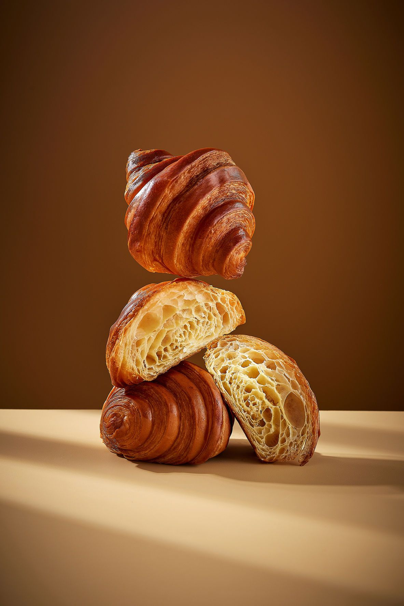
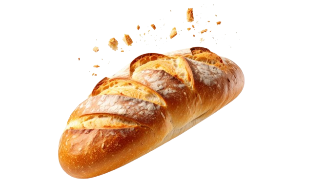

Organic • Homemade • Made with Care
We carefully select organic ingredients to ensure quality and peace of mind in every bite.

Every recipe is homemade and crafted with love and attention to detail.

Baked fresh daily to deliver soft texture and rich flavor every time.

pangorganic began with a simple idea — to create baked goods that are both delicious and wholesome. We believe that desserts should not compromise your health.
With a passion for baking, we developed recipes that are less sweet, made from natural ingredients, and free from preservatives.
Every loaf is crafted with care, just like baking for family.
Our breads are made from natural ingredients, with no preservatives and reduced sugar so you can enjoy every bite with peace of mind.
We carefully select high-quality ingredients like organic flour, real butter, and fresh fruits to create a soft, rich, and unique flavor.
We believe that better choices lead to a better life. At pangorganic, we create baked goods that are both delicious and wholesome — so you can enjoy every day to the fullest.
